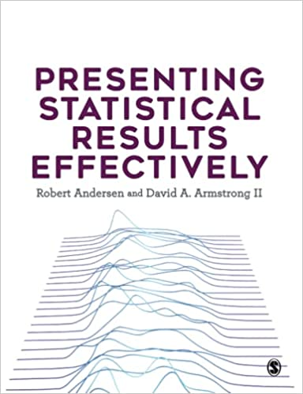

As you’ll see below, my research interests are pretty broad and are often driven by collaborative projects where my contributions are largely methodological in nature. You can see a pdf version of my CV here or view my publications on Google Scholar
Books
Presenting Statistical Results Effectively:
Perfect for any statistics student or researcher, this book offers hands-on guidance on how to interpret and discuss your results in a way that not only gives them meaning, but also achieves maximum impact on your target audience. No matter what variables your data involves, it offers a roadmap for analysis and presentation that can be extended to other models and contexts. Focused on best practices for building statistical models and effectively communicating their results, this book helps you:
- Find the right analytic and presentation techniques for your type of data
- Understand the cognitive processes involved in decoding information
- Assess distributions and relationships among variables
- Know when and how to choose tables or graphs
- Build, compare, and present results for linear and non-linear models
- Work with univariate, bivariate, and multivariate distributions
- Communicate the processes involved in and importance of your results.
We have developed an R package that contains all the data, some helper functions and all the code to replicate the visualizations in the book. You can also download the R code and data from the book’s dataverse.
Analyzing Spatial Models of Choice and Judgment with R, 2nd ed:
With recent advances in computing power and the widespread availability of political choice data, such as legislative roll call and public opinion survey data, the empirical estimation of spatial models has never been easier or more popular. The book demonstrates how to estimate and interpret spatial models using a variety of methods with the popular, open-source programming language R. The second edition is re-organized so all of the Bayesian content is presented in one chapter in a more coherent way. We have also improved the R package and moved to ggplot2 to make all of the plots.
- Clone or install the R package
asmcjrfrom github. The package includes all of the data for the book in addition to the functions that we wrote to estimate and interrogate the models. - Download all the R code
Peer Reviewed Articles:
-
“The Effects of Personality Traits, Environmental Attitudes, and Demographic Factors on Green Party Support in Canada”. Canadian Journal of Political Science [Forthcoming] (with Samuel Routley)
-
“Do Experts and Citizens Perceive Party Competition Similarly” Party Politics [Forthcoming] (with Laura Stephenson and Chris Alcantara)
-
“Political Divisions in Large Cities: The Socio-Spatial Basis of Legislative Behavior in Chicago and Toronto” Journal of Politics [Forthcoming] (with Zack Taylor)
-
“Social Capital, Institutional Rules and Constitutional Amendment Rates” American Political Science Review [2024] 118(2): 1075-1083. (with William Blake, Joseph Cozza and Amanda Friesen)
-
“The Development of Urban-Rural Cleavages in Anglo-American Democracies” Comparative Political Studies [2024] 57(8): 1339-1374. (with Jack Lucas, Zack Taylor and Ryan Bakker).
-
“Exploring the Effects of Electorate Size on Indigenous Voter Turnout” Politics Groups and Identities [2023] 11(1): 98-107. (with Chris Alcantara and John Kennedy)
-
“Covid-19 Policy Convergence in Response to Knightian Uncertainty” Political Studies Review [2023] 21(3): 625–635. (With Anythony Sayers, Christa Scholtz, Christopher Kam and Chris Alcantara)
-
“The Structure of Municipal Voting in Vancouver” Journal of Urban Affairs [2022] 46(7): 1412-1433.
-
“Locating Federalism: Non-Financial Assets and Public Policy in Canada” Canadian Public Administration [2022] 65(2): 314-332 (with Chris Alcantara and Anthony Sayers)
-
“The Urban-Rural Divide in Canadian Federal Elections, 1896–2019.” Canadian Journal of Political Science [2022] 55(1): 84-106. (with Jack Lucas and Zack Taylor)
- “Policy Ideology and Local Ideological Representation in Canada.” Canadian Journal of Political Science [2021] 54(4): 959-976. (with Jack Lucas)
- “Do Governments Keep Their Promises? An Analysis of Speeches From the Throne” Governance [2021] 34(3): 917-934 (with John Kennedy and Chris Alcantara)
-
“Do COVID-19 Policies Affect Mobility Behaviour? Evidence from 75 Canadian and American Cities” Canadian Public Policy [2020] 46(S2): 127-144 (with Matt Lebo and Jack Lucas)
- “Measuring and Comparing Municipal Policy Responses to COVID-19” Canadian Journal of Political Science [2020] 53(2): 227-238 (with Jack Lucas)
-
“Casualty Estimates in the Rwandan Genocide” Journal of Genocide Research [2020] (22)1: 104-111 (with Christian Davenport and Allan Stam).
- “Advisors to Elites: Untangling Their Effects” Journal of Law and Courts [2020] (8)1: 51-73 (with Sara Benesh and Zach Wallander)
-
“Getting The Opposition Together: Protest Coordination in Authoritarian Regimes” Post-Soviet Affairs [2020] 36(1): 1-19 (with Ora John Reuter and Graeme Robertson)
-
“The Consequences of Contention: Understanding the Aftereffects of Political Conflict and Violence Annual Review of Political Science [2019] 22: 361-377 (with Christian Davenport, Havard Nygard and Hanne Fjelde)
- “Using Bayesian Aldrich-McKelvey Scaling to Study Citizens’ Ideological Preferences and Perceptions”
American Journal of Political Science [2015] 59(3): 759-774 (with Christopher Hare, Ryan Bakker, Royce Carroll and Keith Poole)
- Replication Data</br>
- A summary blog post is available at the AJPS website
- “Bootstrap Confidence Regions for Multidimensional Scaling Solutions”
American Journal of Political Science [2014] 58(1): 264-278 (with William G. Jacoby)- Replication Data
- Clone from github
- “factorplot: Improving Presentation of Simple Contrasts in GLMs”
The R Journal [2013] 5(2): 4-15.
- Clone from github
- “Stability and Change in the Freedom House Political Rights and Civil Liberties”
Journal of Peace Research [2011] 48(5): 653-662. - “Protesting While Black? The Differential Policing of American Activism, 1960 to 1990”
American Sociological Review [2011] 76(1): 152-176 (with Christian Davenport and Sarah Soule) - “The Coalition-Directed Vote in Contexts with Multi-party Governments”
American Political Science Review [2010] 104(4):698-719 (with Raymond Duch and Jeff May) - “Why Can Voters Anticipate Post-election Coalition Formation Likelihoods”
Electoral Studies [2010] 28: 308-315 (with Raymond Duch)- BibTeX Entry bib
- “Measuring the Democracy-Repression Nexus”
Electoral Studies [2009] 28: 403-412 - “Democracy and the Violation of Human Rights: A Statistical Analysis from 1976-1996”
American Journal of Political Science [2004] 48(3): 538-554 (with Christian Davenport) - “Turnout and the Local Age Distribution: Examining Political Participation Across Space and Time”
Political Geography [2004] 23: 71-95 (with Jim Gimpel and Irwin Morris)- BibTeX Entry bib
Published Works (Not Peer Reviewed):
-
Explorations: R Statistics Handbook [2021] New York: Oxford University Press (with Jason Roy and Loleen Berdahl)
- “Six Feet Over: Internal War, Battle Deaths and the Influence of the Living on the Dead”
in Dilemmas of Insecurity and Violence: Understanding Security in 21st Century Civil Conflicts Stephen M. Saideman and Marie-Joelle Zahar, eds. London: Routledge (with Christian Davenport)- BibTeX Entry bib
- “Understanding Untouchability: A Comprehensive Study of Practices and Conditions in 1589 Villages” (with C. Davenport, A.M. Klasing, M. Macwan, M. Pradeep, S. Vania, A. Stam and M.K. Varma)
- Press Release pdf